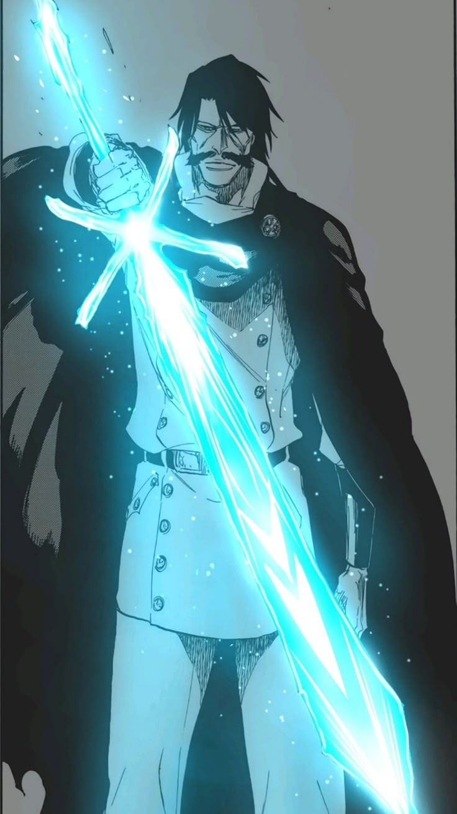

A His Majesty · Emperor
Schrift A — The Almighty
Yhwach
Emperor of the Wandenreich · Father of the Quincy
Schrift: A The AlmightyThe Almighty grants foresight and the power to modify all futures he has foreseen. He can also perform Auswählen — reclaiming the powers of Quincy he deems weak. As the progenitor of all Quincy, his blood flows through Ichigo, making him a linchpin of the entire conflict's origin.
"Everything that exists in this world moves according to my will — including you."